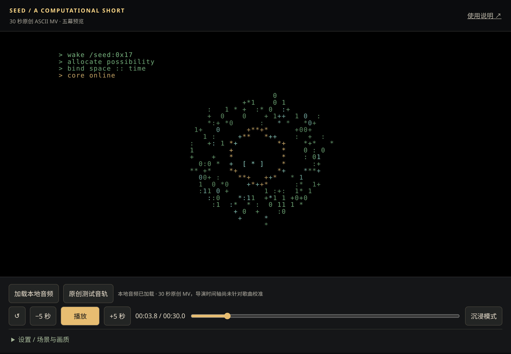
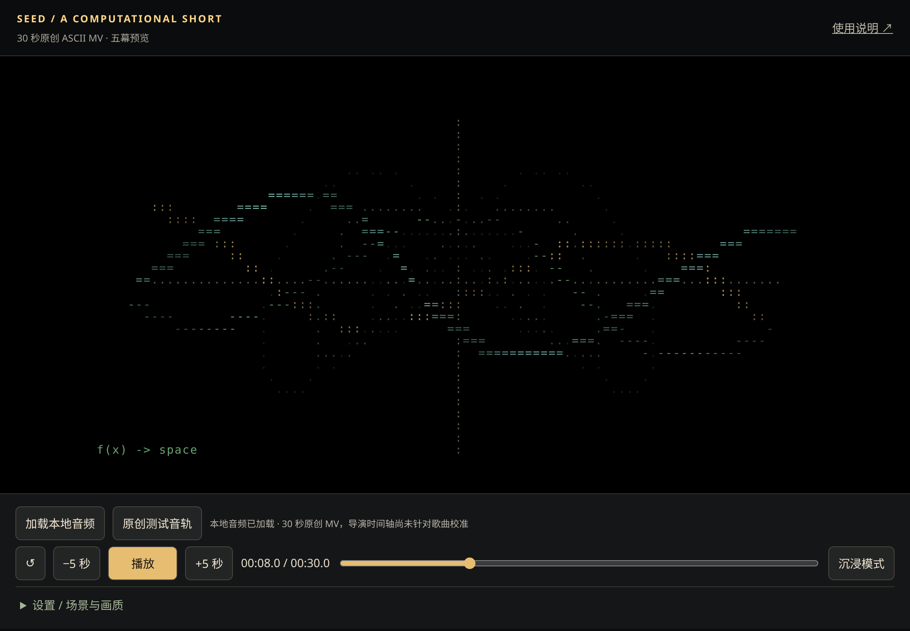
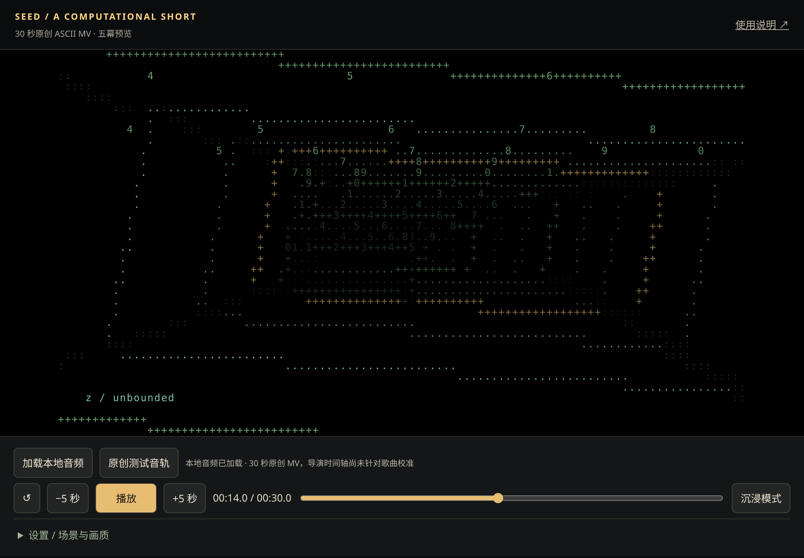
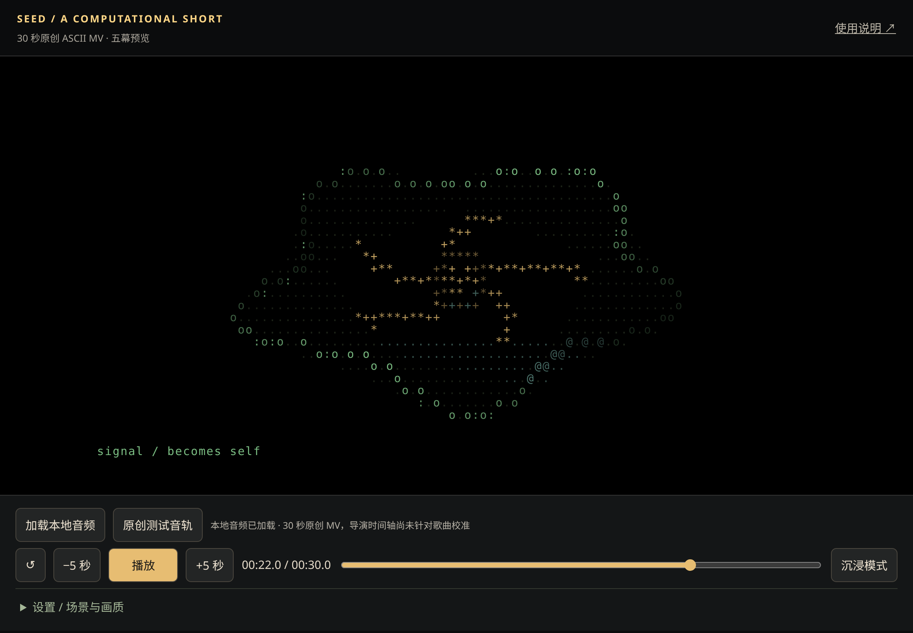
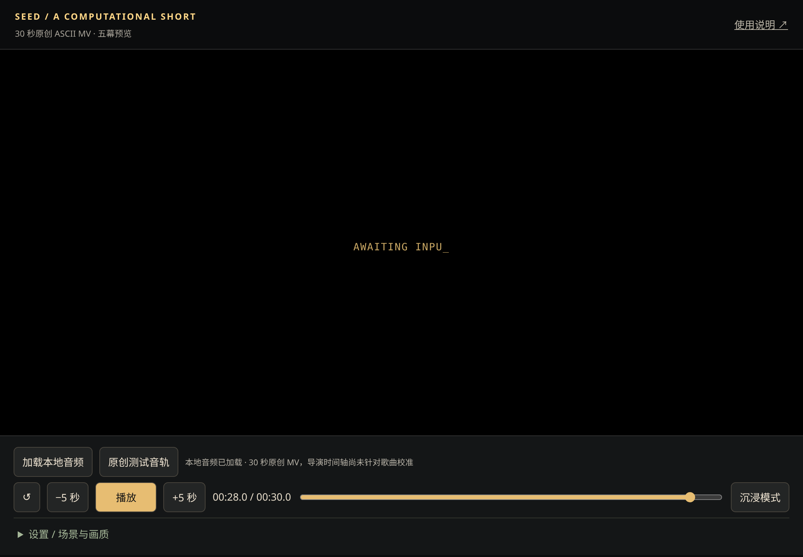

iPad 横屏打开网站，点击“原创测试音轨”，再点击“播放”。也可选择自己有权使用的本地音乐，音频不上传。本次范围是 30 秒，没有捆绑 Mili 音乐、歌词或第三方素材。
五幕依次为：启动 0–5 秒、数学创造 5–11 秒、数据空间 11–18 秒、生命涌现 18–25 秒、意识 25–30 秒。所有主要画面由实时 ASCII 字符计算组成。
拖动进度条会暂时暂停，松开后恢复之前状态。设置内可跳场景、改字符网格、选 24/30 FPS、调整音画偏移或关闭响应。正偏移使动画提前。“沉浸模式”隐藏控制，右下角可恢复。全屏不可用不影响观看。
音频分析使用真实 FFT/RMS，只影响少量视觉参数，不代表已经与原曲精确校准。未做真实 iPad 验收，请参阅测试记录。
下图来自 Chromium 中实际执行网页、加载原创音轨后暂停跳转，不是模拟展示。




